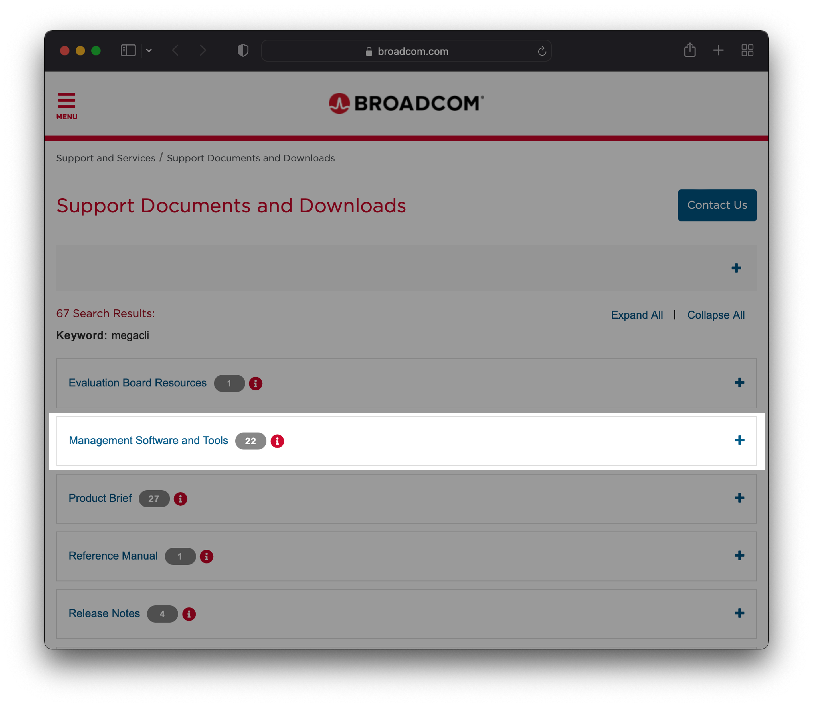
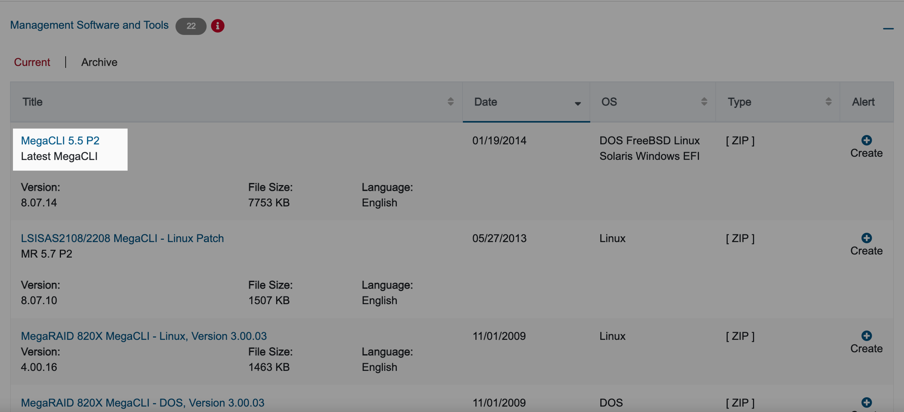

MegaCLI 설치 및 사용법
개요
LSI 사의 RAID Controller가 장착된 리눅스 서버에서 MegaCLI 명령어를 이용해 RAID 관련 정보를 확인할 수 있다.
megacli는 MegaRaid를 CLI 환경에서 조작할 수 있도록 지원하는 관리 소프트웨어이다.
환경
- OS : Red Hat Enterprise Linux Server release 6.2 (Santiago)
- Architecture : x86_64
- Shell : bash
- 설치할 패키지 : MegaCLI v8.07.14 (
MegaCli-8.07.14-1.noarch.rpm)
본문
MegaCLI 패키지 설치
1. RAID Controller 제원 확인
우선 해당 서버의 RAID Controller가 LSI Logic에서 만든 MegaRAID 제품이어야 MegaCli 패키지를 설치후 명령어를 이용 가능하다. 그러니 우선 RAID Controller의 제조사와 모델명부터 확인한다.
확인방법 1. lspci
$ rpm -qa pciutils
pciutils-3.1.4-11.el6.x86_64
lspci 명령어를 사용하기 위해서는 lspci 패키지 설치가 선행되어야 한다.
$ lspci | grep -i raid
06:00.0 RAID bus controller: LSI Logic / Symbios Logic MegaRAID SAS 2208 [Thunderbolt] (rev 03)
RAID Controller 제조사(Vendor)는 LSI Logic, 모델명은 MegaRAID SAS 2208 [Thunderbolt] 라는 정보를 얻을 수 있다.
확인방법 2. lshw
$ rpm -qa lshw
lshw-2.17-1.el6.rf.x86_64
lshw 명령어를 사용하기 위해서는 lshw 패키지 설치가 선행되어야 한다.
해당 서버는 LSI Logic사에서 만든 RAID Controller 모델 MegaRAID SAS 2208 [Thunderbolt]를 사용하고 있다.
$ lshw -c storage
*-storage
description: RAID bus controller
product: MegaRAID SAS 2208 [Thunderbolt]
vendor: LSI Logic / Symbios Logic
physical id: 0
bus info: pci@0000:06:00.0
logical name: scsi0
version: 03
width: 64 bits
clock: 33MHz
capabilities: storage pm pciexpress vpd msi msix bus_master cap_list rom
configuration: driver=megaraid_sas latency=0
resources: irq:40 ioport:d000(size=256) memory:fbd60000-fbd63fff memory:fbd00000-fbd3ffff memory:fbd40000-fbd5ffff(prefetchable)
lshw 명령어 설명
-c <class> : 특정 파트에 대한 상세 정보를 출력한다.
2. 설치파일 다운로드
Broadcom 다운로드 링크 접속
Broadcom 사의 공식 다운로드 홈페이지를 접속한다.
https://www.broadcom.com/support/download-search?dk=megacli
Management Software and Tools 클릭

MegaCLI 5.5 P2 (Version 8.07.14) 클릭

클릭시 팝업 페이지가 뜨며 zip 확장자의 설치파일 다운로드가 시작된다.
3. MegaCLI 패키지 업로드
SFTP, FTP를 이용해 서버에 MegaCLI 설치파일(8-07-14_MegaCLI.zip)을 업로드한다.
$ ls
8-07-14_MegaCLI.zip
$ ls -lh
total 7.6M
-rw-rw-r-- 1 devuser1 devuser1 7.6M Nov 18 09:15 8-07-14_MegaCLI.zip
MegaCLI 설치파일의 용량은 7.6MB 이다.
설치파일 zip을 압축해제한다.
$ unzip 8-07-14_MegaCLI.zip
Archive: 8-07-14_MegaCLI.zip
inflating: 8.07.14_MegaCLI.txt
inflating: DOS/MegaCLI.exe
extracting: FreeBSD/MegaCLI.zip
extracting: FreeBSD/MegaCli64.zip
inflating: Linux/MegaCli-8.07.14-1.noarch.rpm
inflating: Solaris/MegaCli.pkg
inflating: Windows/MegaCli.exe
inflating: Windows/MegaCli64.exe
압축 해제후 생성된 Linux 디렉토리로 이동한다.
$ ls
8-07-14_MegaCLI.zip 8.07.14_MegaCLI.txt DOS FreeBSD Linux Solaris Windows
$ cd Linux
Linux용 패키지 설치파일 확인
$ ls
MegaCli-8.07.14-1.noarch.rpm
4. 패키지 설치
$ rpm -ivh MegaCli-8.07.14-1.noarch.rpm
Preparing... ########################################### [100%]
1:MegaCli ########################################### [100%]
패키지 설치파일명의 noarch는 특정 아키텍쳐를 의미하지 않을 때 붙이는 키워드이다. 아키텍쳐 종류로는 alpha, sparc, sparc64, i386, i586, i686, ppc64 등이 있다. megacli 패키지가 설치되는 절대 경로는 /opt/MegaRAID/MegaCli/ 이다.
5. 명령어 심볼릭 링크 연결
MegaCli64 명령어에는 대소문자와 숫자까지 섞여있다. MegaCLI64 명령어를 편하게 사용하기 위해 MegaCli64 명령어 파일을 megacli로 심볼릭 링크 연결한다.
$ ln -s /opt/MegaRAID/MegaCli/MegaCli64 /usr/bin/megacli
이제부터는 MegaCli64 명령어가 아닌 megacli로 입력해서 사용하면 된다.
$ which megacli
/usr/bin/megacli
6. 명령어 동작 테스트
-v 옵션은 megacli 버전을 출력한다.
$ megacli -v
MegaCLI SAS RAID Management Tool Ver 8.07.14 Dec 16, 2013
(c)Copyright 2013, LSI Corporation, All Rights Reserved.
Exit Code: 0x00
MegaCli 명령어
1. megacli 명령어 메뉴얼 확인
자세한 명령어 메뉴얼은 megacli -h 명령어로 확인 가능하다.
$ megacli -h | more
MegaCLI SAS RAID Management Tool Ver 8.07.14 Dec 16, 2013
(c)Copyright 2013, LSI Corporation, All Rights Reserved.
NOTE: The following options may be given at the end of any command below:
[-Silent] [-AppLogFile filename] [-NoLog] [-page[N]]
[-] is optional.
N - Number of lines per page.
MegaCli -v
MegaCli -help|-h|?
MegaCli -adpCount
MegaCli -AdpSetProp {CacheFlushInterval -val} | { RebuildRate -val}
| {PatrolReadRate -val} | {BgiRate -val} | {CCRate -val} | {ForceSGPIO -val}
| {ReconRate -val} | {SpinupDriveCount -val} | {SpinupDelay -val}
| {CoercionMode -val} | {ClusterEnable -val} | {PredFailPollInterval -val}
| {BatWarnDsbl -val} | {EccBucketSize -val} | {EccBucketLeakRate -val}
| {AbortCCOnError -val} | AlarmEnbl | AlarmDsbl | AlarmSilence
[...]
MegaCli XD -FetchSafeId -iN | -iALL
MegaCli XD -ApplyActivationKey <key> -iN
Exit Code: 0x00
2. 시스템 요약정보 확인
확인 가능한 주요정보
- 시스템 기본정보 : 리눅스 커널 버전, 드라이버 버전, megacli 패키지 버전 정보
- RAID Controller : 제조사, 모델명, 펌웨어 버전, 상태
- RAID 배터리(BBU, Battery Backup Unit) : BBU는 갑작스러운 전원 중단이 발생하더라도 캐시의 내용이 지워지지 않도록 보존하는 역할을 한다.
- 인클로저(Enclosure)
- 물리적 디스크(PD, Physical Drive) 구성정보
- 논리적 디스크(VD, Virtual Drive) 구성정보 : 논리적 디스크는 RAID를 의미한다.
$ megacli -ShowSummary -aALL
System
Operating System: Linux version 2.6.32-220.el6.x86_64
Driver Version: 00.00.05.40-rh2
CLI Version: 8.07.14
Hardware
Controller
ProductName : LSI MegaRAID SAS 9266-8i(Bus 0, Dev 0)
SAS Address : 500605b0057b9570
FW Package Version: 23.9.0-0023
Status : Optimal
BBU
BBU Type :
Status : Healthy
Enclosure
Product Id : SGPIO
Type : SGPIO
Status : OK
PD
Connector : Port 0 - 3<Internal>: Slot 1
Vendor Id : SEAGATE
Product Id : ST9300653SS
State : Online
Disk Type : SAS,Hard Disk Device
Capacity : 278.464 GB
Power State : Active
Connector : Port 0 - 3<Internal>: Slot 0
Vendor Id : SEAGATE
Product Id : ST9300653SS
State : Online
Disk Type : SAS,Hard Disk Device
Capacity : 278.464 GB
Power State : Active
Storage
Virtual Drives
Virtual drive : Target Id 0 ,VD name
Size : 278.464 GB
State : Optimal
RAID Level : 1
Exit Code: 0x00
3. 물리적 디스크 정보 확인
PD는 물리 디스크(Physical Drive)의 약자이다.
## MegaCli64 명령어를 심볼릭 링크로 연결하지 않았을 경우
$ /opt/MegaRAID/MegaCli/MegaCli64 -PDList -aALL
## MegaCli64 명령어를 심볼릭 링크로 연결했을 경우
$ megacli -PDList -aALL
Adapter #0
Enclosure Device ID: 252
Slot Number: 0
Drive's position: DiskGroup: 0, Span: 0, Arm: 1
Enclosure position: N/A
Device Id: 9
WWN: 5000C5005EC4558C
Sequence Number: 2
Media Error Count: 0
Other Error Count: 0
Predictive Failure Count: 0
Last Predictive Failure Event Seq Number: 0
PD Type: SAS
Raw Size: 279.396 GB [0x22ecb25c Sectors]
Non Coerced Size: 278.896 GB [0x22dcb25c Sectors]
Coerced Size: 278.464 GB [0x22cee000 Sectors]
Sector Size: 512
Firmware state: Online, Spun Up
Device Firmware Level: 0004
Shield Counter: 0
Successful diagnostics completion on : N/A
SAS Address(0): 0x5000c5005ec4558d
SAS Address(1): 0x0
Connected Port Number: 1(path0)
Inquiry Data: SEAGATE ST9300653SS 00046XN2SNLZ
FDE Capable: Not Capable
FDE Enable: Disable
Secured: Unsecured
Locked: Unlocked
Needs EKM Attention: No
Foreign State: None
Device Speed: 6.0Gb/s
Link Speed: 6.0Gb/s
Media Type: Hard Disk Device
Drive: Not Certified
Drive Temperature :29C (84.20 F)
PI Eligibility: No
Drive is formatted for PI information: No
PI: No PI
Port-0 :
Port status: Active
Port's Linkspeed: 6.0Gb/s
Port-1 :
Port status: Active
Port's Linkspeed: 6.0Gb/s
Drive has flagged a S.M.A.R.T alert : No
Enclosure Device ID: 252
Slot Number: 1
Drive's position: DiskGroup: 0, Span: 0, Arm: 0
Enclosure position: N/A
Device Id: 8
WWN: 5000C5005EC45560
Sequence Number: 2
Media Error Count: 0
Other Error Count: 0
Predictive Failure Count: 0
Last Predictive Failure Event Seq Number: 0
PD Type: SAS
Raw Size: 279.396 GB [0x22ecb25c Sectors]
Non Coerced Size: 278.896 GB [0x22dcb25c Sectors]
Coerced Size: 278.464 GB [0x22cee000 Sectors]
Sector Size: 512
Firmware state: Online, Spun Up
Device Firmware Level: 0004
Shield Counter: 0
Successful diagnostics completion on : N/A
SAS Address(0): 0x5000c5005ec45561
SAS Address(1): 0x0
Connected Port Number: 0(path0)
Inquiry Data: SEAGATE ST9300653SS 00046XN2SNMA
FDE Capable: Not Capable
FDE Enable: Disable
Secured: Unsecured
Locked: Unlocked
Needs EKM Attention: No
Foreign State: None
Device Speed: 6.0Gb/s
Link Speed: 6.0Gb/s
Media Type: Hard Disk Device
Drive: Not Certified
Drive Temperature :28C (82.40 F)
PI Eligibility: No
Drive is formatted for PI information: No
PI: No PI
Port-0 :
Port status: Active
Port's Linkspeed: 6.0Gb/s
Port-1 :
Port status: Active
Port's Linkspeed: 6.0Gb/s
Drive has flagged a S.M.A.R.T alert : No
Exit Code: 0x00
4. 물리 디스크 개별 에러 카운트 확인
디스크의 Error Count 값이 1 이상이면 디스크 교체를 권고한다.
Predictive Failure Count 값이 급증하는 디스크의 경우는 며칠 이내에 디스크 폴트가 발생할 수 있으니 미리 예비 디스크 파트를 확보해둔다.
$ megacli -PDList -aALL | grep Count
Media Error Count: 0
Other Error Count: 0
Predictive Failure Count: 0
Shield Counter: 0
Media Error Count: 0
Other Error Count: 0
Predictive Failure Count: 0
Shield Counter: 0
5. 논리적 디스크 정보 확인
$ megacli -LDInfo -Lall -aALL
Adapter 0 -- Virtual Drive Information:
Virtual Drive: 0 (Target Id: 0)
Name :
RAID Level : Primary-1, Secondary-0, RAID Level Qualifier-0
Size : 278.464 GB
Sector Size : 512
Mirror Data : 278.464 GB
State : Optimal
Strip Size : 64 KB
Number Of Drives : 2
Span Depth : 1
Default Cache Policy: WriteBack, ReadAhead, Direct, No Write Cache if Bad BBU
Current Cache Policy: WriteBack, ReadAhead, Direct, No Write Cache if Bad BBU
Default Access Policy: Read/Write
Current Access Policy: Read/Write
Disk Cache Policy : Disk's Default
Encryption Type : None
PI type: No PI
Is VD Cached: No
Exit Code: 0x00
6. 어댑터 정보확인
확인 가능한 주요정보
- RAID Controller 모델명
- RAID Controller Serial 번호
- RAID Controller 펌웨어 버전 정보
- RAID Controller가 지원하는 RAID Level 정보
- RAID Controller가 지원하는 드라이브 타입 : SAS, SATA
$ megacli -AdpAllInfo -aALL
Adapter #0
==============================================================================
Versions
================
Product Name : LSI MegaRAID SAS 9266-8i
Serial No : SV23924725
FW Package Build: 23.9.0-0023
Mfg. Data
================
Mfg. Date : 09/29/12
Rework Date : 00/00/00
Revision No : 09B
Battery FRU : N/A
Image Versions in Flash:
================
BIOS Version : 5.38.00_4.12.05.00_0x05180000
WebBIOS Version : 6.1-49-e_49-Rel
Preboot CLI Version: 05.05-03:#%00011
FW Version : 3.220.75-2196
NVDATA Version : 2.1209.03-0117
Boot Block Version : 2.05.00.00-0010
BOOT Version : 07.26.13.219
Pending Images in Flash
================
None
PCI Info
================
Controller Id : 0000
Vendor Id : 1000
Device Id : 005b
SubVendorId : 1000
SubDeviceId : 9266
Host Interface : PCIE
ChipRevision : C1
Link Speed : 0
Number of Frontend Port: 0
Device Interface : PCIE
Number of Backend Port: 8
Port : Address
0 5000c5005ec45561
1 5000c5005ec4558d
2 0000000000000000
3 0000000000000000
4 0000000000000000
5 0000000000000000
6 0000000000000000
7 0000000000000000
HW Configuration
================
SAS Address : 500605b0057b9570
BBU : Present
Alarm : Present
NVRAM : Present
Serial Debugger : Present
Memory : Present
Flash : Present
Memory Size : 1024MB
TPM : Absent
On board Expander: Absent
Upgrade Key : Absent
Temperature sensor for ROC : Present
Temperature sensor for controller : Absent
ROC temperature : 46 degree Celsius
Settings
================
Current Time : 9:44:50 11/18, 2021
Predictive Fail Poll Interval : 300sec
Interrupt Throttle Active Count : 16
Interrupt Throttle Completion : 50us
Rebuild Rate : 30%
PR Rate : 30%
BGI Rate : 30%
Check Consistency Rate : 30%
Reconstruction Rate : 30%
Cache Flush Interval : 4s
Max Drives to Spinup at One Time : 2
Delay Among Spinup Groups : 12s
Physical Drive Coercion Mode : 1GB
Cluster Mode : Disabled
Alarm : Enabled
Auto Rebuild : Enabled
Battery Warning : Enabled
Ecc Bucket Size : 15
Ecc Bucket Leak Rate : 1440 Minutes
Restore HotSpare on Insertion : Disabled
Expose Enclosure Devices : Enabled
Maintain PD Fail History : Disabled
Host Request Reordering : Enabled
Auto Detect BackPlane Enabled : SGPIO/i2c SEP
Load Balance Mode : Auto
Use FDE Only : Yes
Security Key Assigned : No
Security Key Failed : No
Security Key Not Backedup : No
Default LD PowerSave Policy : Automatic
Maximum number of direct attached drives to spin up in 1 min : 10
Auto Enhanced Import : Yes
Any Offline VD Cache Preserved : No
Allow Boot with Preserved Cache : No
Disable Online Controller Reset : No
PFK in NVRAM : No
Use disk activity for locate : No
POST delay : 90 seconds
BIOS Error Handling : Pause on Errors
Current Boot Mode :Normal
Capabilities
================
RAID Level Supported : RAID0, RAID1, RAID5, RAID6, RAID00, RAID10, RAID50, RAID60, PRL 11, PRL 11 with spanning, SRL 3 supported, PRL11-RLQ0 DDF layout with no span, PRL11-RLQ0 DDF layout with span
Supported Drives : SAS, SATA
Allowed Mixing:
Mix in Enclosure Allowed
Mix of SAS/SATA of HDD type in VD Allowed
Mix of SAS/SATA of SSD type in VD Allowed
Status
================
ECC Bucket Count : 0
Limitations
================
Max Arms Per VD : 32
Max Spans Per VD : 8
Max Arrays : 128
Max Number of VDs : 64
Max Parallel Commands : 1008
Max SGE Count : 60
Max Data Transfer Size : 8192 sectors
Max Strips PerIO : 42
Max LD per array : 64
Min Strip Size : 8 KB
Max Strip Size : 1.0 MB
Max Configurable CacheCade Size: 0 GB
Current Size of CacheCade : 0 GB
Current Size of FW Cache : 873 MB
Device Present
================
Virtual Drives : 1
Degraded : 0
Offline : 0
Physical Devices : 3
Disks : 2
Critical Disks : 0
Failed Disks : 0
Supported Adapter Operations
================
Rebuild Rate : Yes
CC Rate : Yes
BGI Rate : Yes
Reconstruct Rate : Yes
Patrol Read Rate : Yes
Alarm Control : Yes
Cluster Support : No
BBU : Yes
Spanning : Yes
Dedicated Hot Spare : Yes
Revertible Hot Spares : Yes
Foreign Config Import : Yes
Self Diagnostic : Yes
Allow Mixed Redundancy on Array : No
Global Hot Spares : Yes
Deny SCSI Passthrough : No
Deny SMP Passthrough : No
Deny STP Passthrough : No
Support Security : No
Snapshot Enabled : No
Support the OCE without adding drives : Yes
Support PFK : Yes
Support PI : Yes
Support Boot Time PFK Change : No
Disable Online PFK Change : No
Support LDPI Type1 : No
Support LDPI Type2 : No
Support LDPI Type3 : No
PFK TrailTime Remaining : 0 days 0 hours
Support Shield State : Yes
Block SSD Write Disk Cache Change: No
Supported VD Operations
================
Read Policy : Yes
Write Policy : Yes
IO Policy : Yes
Access Policy : Yes
Disk Cache Policy : Yes
Reconstruction : Yes
Deny Locate : No
Deny CC : No
Allow Ctrl Encryption: No
Enable LDBBM : No
Support Breakmirror : No
Power Savings : No
Supported PD Operations
================
Force Online : Yes
Force Offline : Yes
Force Rebuild : Yes
Deny Force Failed : No
Deny Force Good/Bad : No
Deny Missing Replace : No
Deny Clear : No
Deny Locate : No
Support Temperature : Yes
NCQ : No
Disable Copyback : No
Enable JBOD : No
Enable Copyback on SMART : No
Enable Copyback to SSD on SMART Error : Yes
Enable SSD Patrol Read : No
PR Correct Unconfigured Areas : Yes
Enable Spin Down of UnConfigured Drives : Yes
Disable Spin Down of hot spares : No
Spin Down time : 30
T10 Power State : No
Error Counters
================
Memory Correctable Errors : 0
Memory Uncorrectable Errors : 0
Cluster Information
================
Cluster Permitted : No
Cluster Active : No
Default Settings
================
Phy Polarity : 0
Phy PolaritySplit : 0
Background Rate : 30
Strip Size : 64kB
Flush Time : 4 seconds
Write Policy : WB
Read Policy : Adaptive
Cache When BBU Bad : Disabled
Cached IO : No
SMART Mode : Mode 6
Alarm Disable : Yes
Coercion Mode : 1GB
ZCR Config : Unknown
Dirty LED Shows Drive Activity : No
BIOS Continue on Error : 1
Spin Down Mode : Internal Only
Allowed Device Type : SAS/SATA Mix
Allow Mix in Enclosure : Yes
Allow HDD SAS/SATA Mix in VD : Yes
Allow SSD SAS/SATA Mix in VD : Yes
Allow HDD/SSD Mix in VD : No
Allow SATA in Cluster : No
Max Chained Enclosures : 16
Disable Ctrl-R : Yes
Enable Web BIOS : Yes
Direct PD Mapping : No
BIOS Enumerate VDs : Yes
Restore Hot Spare on Insertion : No
Expose Enclosure Devices : Yes
Maintain PD Fail History : No
Disable Puncturing : No
Zero Based Enclosure Enumeration : No
PreBoot CLI Enabled : Yes
LED Show Drive Activity : No
Cluster Disable : Yes
SAS Disable : No
Auto Detect BackPlane Enable : SGPIO/i2c SEP
Use FDE Only : Yes
Enable Led Header : No
Delay during POST : 0
EnableCrashDump : No
Disable Online Controller Reset : No
EnableLDBBM : No
Un-Certified Hard Disk Drives : Allow
Treat Single span R1E as R10 : No
Max LD per array : 64
Power Saving option : All power saving options are enabled
Default spin down time in minutes: 30
Enable JBOD : No
TTY Log In Flash : Yes
Auto Enhanced Import : Yes
BreakMirror RAID Support : No
Disable Join Mirror : No
Enable Shield State : No
Time taken to detect CME : 60s
Exit Code: 0x00
7. BBU 정보 확인
BBU(Battery Backup Unit)는 RAID Controller 전용 배터리로, 예고없이 전원 공급이 끊긴 상황에서 캐시 영역의 데이터가 손실되는 걸 방지하는 역할을 한다.
확인 가능한 주요정보
- 배터리 상태 :
Battery State - 제조년월 :
Date of Manufacture - 제조사 :
Manufacture Name - 동작정보 : 전압(
Voltage), 온도(Temperature), Learn Cycle 상태(Learn Cycle Status)
$ megacli -AdpBbuCmd -aALL
BBU status for Adapter: 0
BatteryType: SuperCaP
Voltage: 9438 mV
Current: 0 mA
Temperature: 28 C
Battery State: Optimal
BBU Firmware Status:
Charging Status : None
Voltage : OK
Temperature : OK
Learn Cycle Requested : No
Learn Cycle Active : No
Learn Cycle Status : OK
Learn Cycle Timeout : No
I2c Errors Detected : No
Battery Pack Missing : No
Battery Replacement required : No
Remaining Capacity Low : No
Periodic Learn Required : No
Transparent Learn : No
No space to cache offload : No
Pack is about to fail & should be replaced : No
Cache Offload premium feature required : No
Module microcode update required : No
BBU GasGauge Status: 0x002a
Pack energy : 298 J
Capacitance : 0
Remaining reserve space : 93
Battery backup charge time : 0 hours
BBU Design Info for Adapter: 0
Date of Manufacture: 06/13, 2012
Design Capacity: 283 J
Design Voltage: 9411 mV
Serial Number: 2679
Manufacture Name: LSI
Firmware Version :
Device Name: SuperCaP
Device Chemistry:
Battery FRU: N/A
TMM FRU: N/A
Transparent Learn = 1
App Data = 0
BBU Properties for Adapter: 0
Auto Learn Period: 28 Days
Next Learn time: Tue Dec 14 12:07:23 2021
Learn Delay Interval:0 Hours
Auto-Learn Mode: Transparent
Exit Code: 0x00
8. 컨트롤러 로그확인
$ megacli -fwtermlog -dsply -aALL
[...]
11/06/21 3:32:08: pii ccisue ld pii=1 ld=0
11/06/21 3:32:08: cmdBlockPrep: Command block started (host IOs blocked)
11/06/21 3:32:08: EVT#55239-11/06/21 3:32:08: 58=Consistency Check done on VD 00/0
11/06/21 3:32:08: pii modvd bvd pii=1 <- ld ld=0
11/06/21 3:32:08: ccScheduleSetNextStartTime: RTC_TimeStamp=2918b3b8, nextStartTime=2921e6ac
11/06/21 3:32:08: Next cc scheduled to start at 11/13/21 2:59:56
11/06/21 3:32:08: CC Schedule cycle complete
11/06/21 3:32:08: updateBlockDone: DDF update started
11/06/21 3:32:08: updateStartNext: DDF update complete
11/06/21 3:32:08: ld sync: all LDs sync'd
11/06/21 3:32:08: FP_NotifyAndChangeAll - Driver ldsync required 1
11/06/21 3:32:08: CmdUnBlock: Final command block released (host IOs were blocked for 266 ms)
11/06/21 3:32:08: ld sync: all LDs sync'd
11/06/21 3:32:08: LdDcmdSynchronize gLdSyncRequired:0 mfiCmdStatus:0
11/12/21 12:04:03: EVT#55240-11/12/21 12:04:03: 157=Battery relearn will start in 4 days
11/13/21 2:59:56: prDiskStart: starting Patrol Read on PD=08
11/13/21 2:59:56: EVT#55241-11/13/21 2:59:56: 94=Patrol Read progress on PD 08(e0xfc/s1) is 0.00%(0s)
11/13/21 2:59:56: prDiskStart: starting Patrol Read on PD=09
11/13/21 2:59:56: EVT#55242-11/13/21 2:59:56: 94=Patrol Read progress on PD 09(e0xfc/s0) is 0.00%(0s)
11/13/21 2:59:56: EVT#55243-11/13/21 2:59:56: 39=Patrol Read started
11/13/21 2:59:56: EVT#55244-11/13/21 2:59:56: 66=Consistency Check started on VD 00/0
11/13/21 2:59:56: pii modvd bvd pii=1 <- ld ld=0
11/13/21 2:59:56: cmdBlockPrep: Command block started (host IOs blocked)
11/13/21 2:59:56: prDiskCheckOkToRun: PR cannot run on this pd=8 init or CC running ld=0
11/13/21 2:59:56: prCallback: PR being stopped for pd=08 - state changed
11/13/21 2:59:56: EVT#55245-11/13/21 2:59:56: 445=Patrol Read aborted on PD 08(e0xfc/s1)
11/13/21 2:59:56: prDiskCheckOkToRun: PR cannot run on this pd=9 init or CC running ld=0
11/13/21 2:59:56: prCallback: PR being stopped for pd=09 - state changed
11/13/21 2:59:56: EVT#55246-11/13/21 2:59:56: 445=Patrol Read aborted on PD 09(e0xfc/s0)
11/13/21 2:59:56: PR cycle complete
Exit Code: 0x00
RAID Controller 로그에는 PR(Patrol Read)이 수행된 기록, 일관성 검사(CC, Consistency Check) 기록, 논리적 디스크(LD, Logical Drive)의 동기화를 맺은 기록 등이 남아있다.
일관성 검사
영어로 Consistency Check, 축약형은 CC. 일관성 검사는 데이터 및 중복이 올바르게 일치하는지 확인하기 위해 어레이의 모든 드라이브를 서로 비교하는 수동으로 활성해야 동작하는 기능이다. RAID 1으로 구성된 경우 한 드라이브의 데이터를 다른 드라이브와 비교하여 데이터가 오류 없이 복제(미러링)되는지 확인한다.
9. Patrol Read
Patrol Read(PR)는 디스크 오류 상태가 악화되어 데이터가 손실되기 전에 디스크 오류를 미리 발견하는 자동검사 기능이다.
기본값으로 새벽 시간마다 자동 수행되며, 수행 간격(Patrol Read Execution Delay)은 168시간이다. Patrol Read는 I/O 리소스의 최대 30%를 차지할 수 있다.
PR 설정정보 확인
$ megacli -AdpPR -Info -aALL
Adapter 0: Patrol Read Information:
Patrol Read Mode: Auto
Patrol Read Execution Delay: 168 hours
Number of iterations completed: 448
Next start time: 11/20/2021, 02:00:00
Current State: Stopped
Patrol Read on SSD Devices: Disabled
Exit Code: 0x00
해석
Patrol Read Execution Delay: Patrol Read를 실행하는 간격(주기)를 의미합니다.Number of iterations completed: 지금까지 수행 완료된 Patrol Read 횟수를 의미합니다.Next start time: 다음 Patrol Read가 실행되는 시간Patrol Read on SSD Devices: SSD(Solid State Drive)에도 Patrol Read를 수행하는지 여부 (Patrol Read는 기본적으로 SSD 장치에는 수행하지 않고, HDD 장치에서만 실행합니다.)
PR 활성화
$ megacli -AdpPR -EnblAuto -aALL
Adapter 0: Patrol Read Mode is set to AUTO.
Exit Code: 0x00
PR 비활성화
$ megacli -AdpPR -Dsbl -aALL
Adapter 0: Patrol Read Mode is set to DISABLED.
Exit Code: 0x00
PR 스캔 수동실행
Patrol Read 스캔 작업은 I/O 자원의 최대 30%까지 점유할 수 있다. 따라서 PR 스캔 수동실행 명령어를 실행할 경우 반드시 부하가 적은 시간대(off-peak times)에 시행해야 한다.
$ megacli -AdpPR -Start -aALL
PR 스캔 중지
$ megacli -AdpPR -Stop -aALL
10. 디스크 LED 블링크
디스크 교체 작업을 진행할 때 교체 대상 디스크의 전면 LED를 점등시킨 후 교체 작업을 진행하면 정상 디스크를 잘못 제거하는 등의 인적 실수(Human Fault)를 방지할 수 있다.
특정 디스크의 물리적 위치를 파악할 때도 사용 가능하다.
1. Enclosure, Slot 번호 확인
LED Blink를 실행시키려면 먼저 해당 디스크의 Enclosure 번호(Enclosure Device ID)와 디스크 슬롯 번호(Slot Number)를 먼저 파악해야한다.
$ megacli -PDList -aALL
Adapter #0
Enclosure Device ID: 252
Slot Number: 0
Drive's position: DiskGroup: 0, Span: 0, Arm: 1
Enclosure position: N/A
Device Id: 9
WWN: 5000C5005EC4558C
Sequence Number: 2
Media Error Count: 0
Other Error Count: 0
Predictive Failure Count: 0
Last Predictive Failure Event Seq Number: 0
PD Type: SAS
Enclosure Device ID: 252는 Enclosure 번호, Slot Number: 0은 디스크 슬롯 번호를 의미한다.
2. LED Blinking 시작
252번 Enclosure의 0번 슬롯에 장착된 디스크는 -physdrv 옵션에서 [252:0]로 표기한다.
[252:0]
--- -
| +----> 0 : (Disk) Slot Number
|
+-------> 252 : Enclosure Device ID
$ megacli -PdLocate -start -physdrv[252:0] -aALL
Adapter: 0: Device at EnclId-252 SlotId-0 -- PD Locate Start Command was successfully sent to Firmware
Exit Code: 0x00
서버 전면부에 장착된 디스크의 LED가 깜빡이는지 확인한다.
3. LED Blinking 중지
$ megacli -PdLocate -stop -physdrv[252:0] -aALL
Adapter: 0: Device at EnclId-252 SlotId-0 -- PD Locate Stop Command was successfully sent to Firmware
Exit Code: 0x00
서버 전면부에 장착된 0번 디스크의 LED 점멸이 멈춘다.